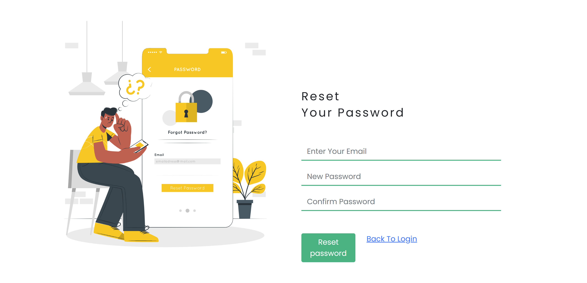
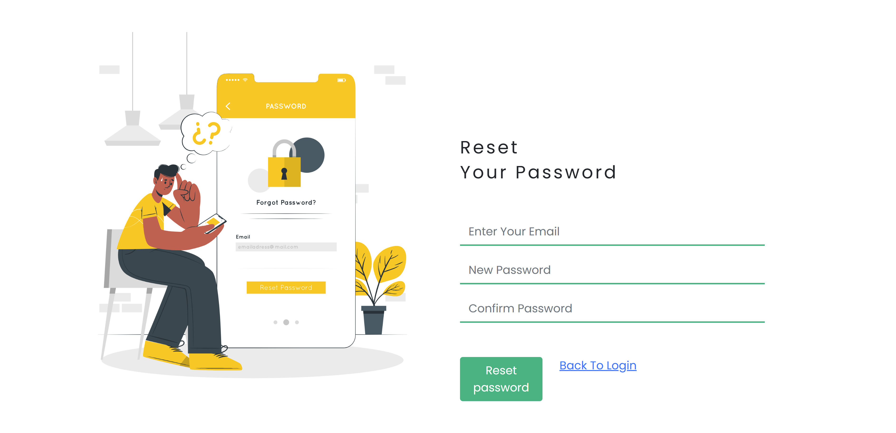

Détails du Projet
Site web interactif utilisant J2EE, HTML, CSS, JS, et MySQL.


 



×

- Langages : Html, Css, JavaScript, Sass, JEE
- Frameworks : Hibernate
- Outils : VS Code et Eclipse, Apache, Postman, phpMyAdmin
Le projet a pour but de :
- Conçu et mis en œuvre un site web éducatif en utilisant HTML, CSS, JavaScript, Sass, J2EE et MySQL.
- Développé un front-end interactif pour une expérience utilisateur fluide ainsi qu'un back-end J2EE pour des fonctionnalités serveur telles que la gestion des utilisateurs et le stockage sécurisé des données.
- Livré une plateforme éducative complète en full-stack.